install.packages("reticulate")
library(reticulate)
# For windows users, you might need to install GIT for this go to: https://git-scm.com/install/windows and download and install
# this is done outside of R.
install_python()
# !!!! Restart R manually !!!!
library(reticulate)
install_miniconda()
# !!!! Restart R manually !!!!
# We now create a virtual environment for the course, you can replace "DAFS" with a name you prefer
virtualenv_create("DAFS") # create the virtual environment
use_virtualenv("DAFS") # set the virtual environment (activation)
# We install pip in the DAFS environment
conda_install("DAFS", "pip")
# Now we install all the required packages
py_install(c(
"transformers==4.56.2",
"torch",
"sentencepiece",
"safetensors",
"accelerate",
"protobuf"
), pip = TRUE)
# Install the huggingfaceR package if this is not already installed
install.packages("remotes")
remotes::install_github("farach/huggingfaceR")Sentiment Analysis
Introduction
Public debates about sustainability are increasingly shaped by text: policy documents, NGO reports, corporate sustainability statements, news coverage, social media, and scientific communication. These texts do more than describe facts—they frame problems, express priorities, and evoke emotions that can influence public support, investment decisions, and policy outcomes. In this course, you will learn how to systematically analyze those signals using sentiment and emotion analysis in R, and how to apply the results to real sustainability questions.
We will start with the most familiar approach: polarity sentiment—classifying text as positive, negative, or neutral. This is a useful first lens for identifying broad patterns (e.g., whether climate-policy reporting becomes more negative during crises, or whether companies use consistently positive framing in sustainability reports). At the same time, you will learn why polarity alone can be misleading in sustainability contexts: “negative” language may reflect urgency and risk (not rejection), and “positive” language may reflect promotional framing rather than real progress.
Next, we will distinguish between subjective vs. objective language. Sustainability writing often mixes evidence-based claims with interpretation and persuasion. Being able to separate factual statements from opinions, evaluations, or advocacy is essential when you want to compare stakeholder narratives, assess rhetorical strategies, or track how evidence and framing evolve over time.
We then move beyond polarity to discrete emotions, such as anger, fear, sadness, joy, trust, and hope. This helps answer richer questions: Are communications mobilizing concern or offering reassurance? Do messages about energy transitions emphasize fear and risk, or opportunity and optimism? Which actors use which emotional repertoires—and when?
Finally, we will work with continuous emotion measurement using the VAD framework: Valence, Arousal, and Dominance. Instead of placing text into a small set of categories, VAD treats emotion as a position in a continuous space:
- Valence: unpleasant ↔︎ pleasant
- Arousal: calm ↔︎ activated/urgent
- Dominance: powerless ↔︎ in-control/agentic
This approach is particularly valuable for sustainability, where language is often nuanced and strategic (e.g., high arousal with low dominance can signal alarm and helplessness; high dominance with positive valence can signal confidence and agency).
Throughout the course, the emphasis is practical and reproducible: you will learn to build end-to-end workflows in R, from collecting and cleaning text, to applying models and lexicons, to interpreting outputs responsibly and communicating results clearly. By the end, you should be able to design and execute sentiment and emotion analyses that meaningfully support sustainability research and decision-making—while understanding the assumptions, limitations, and ethical considerations that come with “measuring” emotion in text.
1. Polarity sentiment analysis
We start with polarity sentiment analysis: estimating whether a text expresses an overall positive, neutral, or negative tone. In sustainability contexts, polarity provides a scalable first lens to compare how issues are framed across sources such as policy documents, NGO communications, corporate sustainability reports, news articles, and social media.
For the purpose of this explanation and the associated lecture, we will use we use the Hugging Face model:
tabularisai/multilingual-sentiment-analysis
This is a multilingual transformer model, which makes it suitable for sustainability material that may include multiple languages (including Dutch and English). It produces sentiment predictions based on context, rather than relying only on word lists, which is important when meaning depends on phrasing, negation, or domain-specific language.
1.2 Output classes and how we use them
The model outputs three sentiment categories: - Negative - Neutral - Positive
1.3 Interpreting polarity
A core learning objective is responsible interpretation. In sustainability discourse, polarity often reflects framing rather than simple approval or disapproval:
Negative sentiment can signal urgency, risk, or harm, not opposition (e.g., reporting on climate impacts). Criticism, disappointment, frustration, anger, worry, or pessimism.
Positive sentiment can reflect promotional or aspirational language, not necessarily real-world improvement (e.g., corporate messaging). Satisfaction, praise, encouragement, or optimism.
Neutral sentiment can reflect technical style, common in policy and scientific writing, even when implications are substantial. Factual, descriptive, or informational, no clear positive or negative evaluation.
We treat polarity as an indicator that should be triangulated with additional analyses (topics, actors, discrete emotions, and VAD).
ImportantVery important
Transformer models have practical limits that shape good analysis design: Text length constraints mean long documents should be split (often into sentences) to avoid truncation.
Context trade-offs arise when you analyze smaller units; we will discuss strategies to combine sentence-level results into robust document-level indicators.
1.4 Setting up the pipeline
Installation of the required packages will depend on how the bertopic session went for you. So please follow according to your situation:
IF everything from bertopic works for you, go to step 2. If you had trouble with the bertopic install go to step 1.
Step 1:
Supposing that there are some issues with bertopic, we create a new environment in a new way. For this following the steps below:
At this point all the required elements should be installed. To use the model, follow these steps:
# To run the model:
# We load the transformers architecture that forms the base for the model
transformers <- import("transformers")
# We load a tokenizer that splits the text, and transforms the text into numnerical values
tok <- transformers$AutoTokenizer$from_pretrained("cardiffnlp/twitter-xlm-roberta-base-sentiment")
# We set up the pipeline between the task and the model.
pipe <- transformers$pipeline(
task = "text-classification",
model = "cardiffnlp/twitter-xlm-roberta-base-sentiment",
tokenizer = tok
)
# The task is text-classification, since we use the model to classify a text into one of three categories.
# You can test that the pipe works by running:
pipe("I love this")Step 2
If the environment already worked for Bertopic then follow the following steps:
# Activate the environment
reticulate::use_virtualenv("bertopic_r_env_spacy", required = TRUE)# Install the huggingfaceR package if this is not already installed
install.packages("remotes")
remotes::install_github("farach/huggingfaceR")# setup the pipeline
sentiment_classifier <- huggingfaceR::hf_load_pipeline(
model = "cardiffnlp/twitter-xlm-roberta-base-sentiment",
tokenizer = "cardiffnlp/twitter-xlm-roberta-base-sentiment")
cardiffnlp/twitter-xlm-roberta-base-sentiment is ready for text-classificationWhat this does:
- hf_load_pipeline(…) creates an R object (backed by Python/Transformers under the hood) that is ready to run sentiment inference.
- model specifies which pretrained transformer to use. Here, it is a multilingual sentiment model that predicts one of three labels: Negative, Neutral, Positive.
Tokenizer specifies the matching tokenizer for that model. The tokenizer is essential: it converts your raw text into the numerical token IDs the model can process. Using the model’s own tokenizer ensures the text is encoded exactly as expected.
1.5 Ilustration on one text
As an illustration let’s take a speech, please take a couple of minutes to listen to the following speeach:
This is the transcript of the speech:
speech = c("I’m sorry, but I don’t want to be an emperor. That’s not my business. I don’t want to rule or conquer anyone. I should like to help everyone - if possible - Jew, Gentile - black man - white. We all want to help one another. Human beings are like that. We want to live by each other’s happiness - not by each other’s misery. We don’t want to hate and despise one another. In this world there is room for everyone. And the good earth is rich and can provide for everyone. The way of life can be free and beautiful, but we have lost the way.
Greed has poisoned men’s souls, has barricaded the world with hate, has goose-stepped us into misery and bloodshed. We have developed speed, but we have shut ourselves in. Machinery that gives abundance has left us in want. Our knowledge has made us cynical. Our cleverness, hard and unkind. We think too much and feel too little. More than machinery we need humanity. More than cleverness we need kindness and gentleness. Without these qualities, life will be violent and all will be lost…
The aeroplane and the radio have brought us closer together. The very nature of these inventions cries out for the goodness in men - cries out for universal brotherhood - for the unity of us all. Even now my voice is reaching millions throughout the world - millions of despairing men, women, and little children - victims of a system that makes men torture and imprison innocent people.
To those who can hear me, I say - do not despair. The misery that is now upon us is but the passing of greed - the bitterness of men who fear the way of human progress. The hate of men will pass, and dictators die, and the power they took from the people will return to the people. And so long as men die, liberty will never perish…
Soldiers! don’t give yourselves to brutes - men who despise you - enslave you - who regiment your lives - tell you what to do - what to think and what to feel! Who drill you - diet you - treat you like cattle, use you as cannon fodder. Don’t give yourselves to these unnatural men - machine men with machine minds and machine hearts! You are not machines! You are not cattle! You are men! You have the love of humanity in your hearts! You don’t hate! Only the unloved hate - the unloved and the unnatural! Soldiers! Don’t fight for slavery! Fight for liberty!
In the 17th Chapter of St Luke it is written: “the Kingdom of God is within man” - not one man nor a group of men, but in all men! In you! You, the people have the power - the power to create machines. The power to create happiness! You, the people, have the power to make this life free and beautiful, to make this life a wonderful adventure.
Then - in the name of democracy - let us use that power - let us all unite. Let us fight for a new world - a decent world that will give men a chance to work - that will give youth a future and old age a security. By the promise of these things, brutes have risen to power. But they lie! They do not fulfil that promise. They never will!
Dictators free themselves but they enslave the people! Now let us fight to fulfil that promise! Let us fight to free the world - to do away with national barriers - to do away with greed, with hate and intolerance. Let us fight for a world of reason, a world where science and progress will lead to all men’s happiness. Soldiers! in the name of democracy, let us all unite!")We will now take this speech and transform is into a dataframe with one sentence per row.
speech <- tibble(text = speech) %>%
mutate(doc_id = row_number()) %>%
unnest_tokens(sentence, text, token = "sentences")The unnest_tokens() function extracts text, by setting the token at the “sentence” level, it will extract sentences automatically.
The result looks like this:
head(speech)# A tibble: 6 × 2
doc_id sentence
<int> <chr>
1 1 i’m sorry, but i don’t want to be an emperor.
2 1 that’s not my business.
3 1 i don’t want to rule or conquer anyone.
4 1 i should like to help everyone - if possible - jew, gentile - black ma…
5 1 we all want to help one another.
6 1 human beings are like that. Now we apply the classifier to each of the sentences.
# We are going to compute the values using a loop
# we first add a label and score column to store the results
speech$label <- NA
speech$score <- NA
# We loop over the dataframe, for each sentence we compute the values and then store them.
for(i in 1:dim(speech)[1]){
tmp = sentiment_classifier(speech[i,2]$sentence)
speech[i,3] <- tmp[[1]]$label
speech[i,4] <- tmp[[1]]$score
}Notice that a sentence such as “I’m sorry, but i don’t want to be an emperor” is classified as negative. What does this mean? In these models, “negative” does not mean “bad” in any moral or factual sense, and it does not mean “incorrect” or “undesirable.” It is a label for the affective polarity the model infers from the wording and context.
For transformer sentiment models, negative is best understood as: Negative valence: the text expresses an unpleasant, adverse, or rejecting stance. Dissatisfaction / disapproval / refusal: language that signals rejection (“don’t want,” “won’t,” “cannot”), denial, complaint, or critique. Negative emotional tone: sadness, frustration, regret, fear, anger—often collapsed into the same “negative” bucket when the model is trained on polarity. This sentence contains strong refusal and negation (“I don’t want to be…”). Many sentiment datasets treat refusal, rejection, and negated desire as negative affect, even if the underlying intent is principled or compassionate. Why this happens for this sentence “I’m sorry, but I don’t want to be an emperor.” carries:
- apology/regret (“I’m sorry”): often associated with negative affect,
- explicit negation (“don’t want”): frequently associated with negative
- polarity, rejection of a role (declining power): linguistically similar to rejecting an offer, which many training datasets label as negative.
So the model is not concluding that the speaker is a “negative person.” It is simply picking up that the sentence expresses a negative orientation toward the proposition ‘being an emperor’ and a tone of regret/refusal.
1.6 Visualising the values.
Let’s first gave a look at the overall distribution of the categories:
plot(p)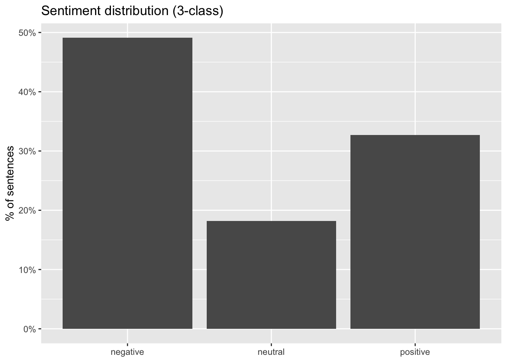
This shows that almost half of the sentences are considered negative, with just about 33% being positive. Overall this means the speech has a negative dimension.
- A large “negative” component reflects condemnation and urgency. The speech spends substantial time naming and criticizing oppression, greed, hate, war, and dehumanization. Even when the intent is moral critique, the surface language contains many negative-affect tokens, which sentiment classifiers typically map to “negative.”
- A substantial “positive” component reflects the aspirational call-to-action. The speech also contains hope-oriented and solidarity-oriented lines (humanity, kindness, freedom, a better future). That produces a sizeable positive share rather than an overwhelmingly negative profile.
- Low “neutral” is typical for persuasive oratory. A speech designed to move an audience tends to avoid emotionally flat statements; it alternates between problem-framing (often negative) and vision/mobilization (often positive).
ImportantVery important
A sentence describing terrible things in order to reject them can still be labeled negative. “Negative” here is better explained as negative affect / negative content, not “the speaker is against the message.”
Sentence-level classification also drops context (e.g., a sentence that only says “We must fight…” may be classified differently depending on what came before).
Let’s now have a look at the progress of the classifications as the speech progresses:
plot(p)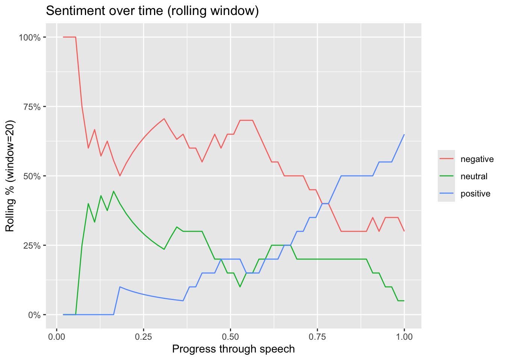
Strongly negative opening:
In the first ~5–10% of the speech, the rolling window is dominated by negative (briefly near 100% at the very start, then quickly dropping). That initial “100% negative” is a common rolling-window artifact: at the beginning you do not yet have a full window of 20 sentences, so a few early labels can dominate. The speech opens with problem framing (risks, harms, critique, urgency) and/or “refusal/negation” language that polarity models tend to mark as negative. 2) Long middle section: predominantly negative with a stable neutral component Roughly from ~0.10 to ~0.60 progress, negative stays high (often around 55–70%). Neutral sits mostly around ~20–35% with fluctuations. Positive remains low (mostly under ~20%) and even declines early before slowly rising.
Interpretation: the bulk of the speech continues to emphasize challenges, threats, losses, or critique, with a meaningful portion of more factual/technical sentences (neutral).
Pivot: Clear tonal pivot later in the speech Around ~0.60 onward, positive steadily increases. Negative steadily declines over the same span. The lines cross at about 0.75–0.80, where positive overtakes negative. Interpretation: this looks like a classic rhetorical arc: after establishing the problem, the speaker moves into solutions, agency, calls to action, or hopeful framing.
Ending: predominantly positive, low neutrality By the end, positive reaches roughly 60–65% in the window. Negative stabilizes around 30–35%. Neutral drops to ~5–10%.
1.7 Illustration on a set of speeches
The data for this illustration is available on brightspace. The data is a set of speeches from the UN on the topic of climate change.
The previous illustration focused on one single speech, but with the same techniques we can analyse a corpus of speeches. For this illustration we will use a corpus of 8012 speeches from the UN that mention “Climate Change”.
As we have shown in the previous illustration it can we quite difficult to assess when a speech is positive/negative/neutral. So we need to set a rule to decide how we decide on this. The data contains the speaker, and for some of them their political party. If we want to show the position of people or parties on climate change, let’s say for now that we compute the % of positive/negative/neutral sentences for each of the speeches and then aggregate later on. This should allow us to answer questions related to the position of people/parties on the topic. From a programming perspective this means that we need to compute the sentiment for each sentence, and then average out at the level of of the speech.
Below the script shows how to compute the values for the entire set. The script takes a long time to run. So preferebly test this on a subset or on your own data once you’re ready. The results of this step are also on brightspace in the “UN_speeches_PNN_per_sentence.rdata” file.
# This script prepares the data and computes
# the sentiment scores. Since this can take while
# to run, you are provided with the results of this step
# with a file on brightspace.
load("~/Desktop/Teachings/NetworkIsLife2/NetworkIsLife/climate_change_speeches.rdata")
climate_change_speeches$speech_id = as.numeric(row.names(climate_change_speeches))
sent_df <- climate_change_speeches %>%
select(speech_id, text) %>%
unnest_tokens(sentence, text, token = "sentences") %>%
mutate(
sentence = str_squish(sentence),
sentence_id = row_number(),
.by = speech_id
) %>%
filter(sentence != "")
# We make sure the sentences are short enough for the model
# to handle them.
sent_df <- sent_df %>%
mutate(sentence = str_sub(sentence, 1, 512))
sent_df$label <- "None"
sent_df$score <- 0
sent_df = as.data.frame(sent_df)
for(i in 1:dim(sent_df)[1]){
if(i%% 100 == 0){print(i)}
tmp = sentiment_classifier(sent_df[i,2])
sent_df[i,4] <- tmp[[1]]$label
sent_df[i,5] <- tmp[[1]]$score
}
save(sent_df, file = "UN_speeches_PNN_per_sentence.rdata")Here we start analysing the results of the sentiment analysis. You can load the “UN_speeches_PNN_per_sentence.rdata” file from brightspace.
Since we have the polarity scores at the sentence level, we need to decide how to assess the speech. The idea would be to compute the fraction of sentences of each polarity for each speech. This then allows us to decide which label to assign to the speech.
load("UN_speeches_PNN_per_sentence.rdata")
speech_sentiment <- sent_df %>%
# Start a dplyr pipeline:
# - `sent_df` is a data frame where each row represents one sentence
# - It must contain:
# * `speech_id`: identifier telling us which speech a sentence belongs to
# * `label`: the predicted sentiment class for that sentence (e.g., "positive", "negative", "neutral")
#
# Goal of this pipeline:
# 1) Aggregate sentence-level sentiment to the speech level
# 2) Compute, for each speech, the share of sentences in each sentiment label
# 3) Reshape to a wide format: one row per speech, one column per sentiment label
# 4) Clean column names (replace spaces with underscores)
# Count the number of sentences per (speech_id × label) combination.
# This is a grouped frequency table, but returned as a tibble.
#
# Example outcome (conceptually):
# speech_id label n_sentences
# 1 positive 12
# 1 neutral 30
# 1 negative 8
#
# `name = "n_sentences"` sets the count column name explicitly.
count(speech_id, label, name = "n_sentences") %>%
# From here, we want speech-level totals and percentages.
# Group by `speech_id` so subsequent summaries/mutations operate within each speech.
group_by(speech_id) %>%
# Compute:
# - `total_sentences`: total number of sentences in the speech, across all labels
# - `pct`: proportion of sentences in the current label within the speech
#
# Because we are grouped by `speech_id`, `sum(n_sentences)` is computed per speech.
# `pct` will be repeated for each label row within a speech (one pct per label).
mutate(
total_sentences = sum(n_sentences),
pct = n_sentences / total_sentences
) %>%
# Remove grouping to avoid accidental grouped behavior in later steps.
ungroup() %>%
# Keep only the columns needed downstream:
# - `speech_id`: row identifier for the final table
# - `label`: will become the new column names in wide format
# - `pct`: will become the values in those columns
select(speech_id, label, pct) %>%
# Reshape from long to wide:
# - Each distinct `label` becomes its own column
# - The value in that column is `pct`
#
# `values_fill = 0`:
# - If a speech has no sentences predicted for a given label, that (speech, label) is missing
# - This fills those missing combinations with 0 instead of NA
#
# Example wide outcome (conceptually):
# speech_id positive neutral negative
# 1 0.24 0.60 0.16
pivot_wider(
names_from = label,
values_from = pct,
values_fill = 0
) %>%
# Clean up column names:
# Some labels can contain spaces (e.g., "very positive").
# This replaces one-or-more whitespace characters with underscores.
rename_with(~ str_replace_all(.x, "\\s+", "_"))We now have a df with for each speech the fraction of sentences for each polarity:
speech_sentiment# A tibble: 8,012 × 4
speech_id negative neutral positive
<dbl> <dbl> <dbl> <dbl>
1 1 0.235 0.235 0.529
2 2 0.262 0.357 0.381
3 3 0.333 0.262 0.405
4 4 0.190 0.405 0.405
5 5 0.357 0.393 0.25
6 6 0.0667 0.533 0.4
7 7 0.133 0.4 0.467
8 8 0 0.25 0.75
9 9 0.1 0.2 0.7
10 10 0.778 0.222 0
# ℹ 8,002 more rowsWe can now go further into the analysis, the data also has the names of the speakers and the parties. Let’s dive deeper into the polarity of the speakers and parties when they talk about climate change. For this we join the data from the speeches to the polarity values:
speech_sentiment = left_join(speech_sentiment, climate_change_speeches, by = "speech_id")Now let see who has the highest positive/negative scores
avg_scores_per_speaker = speech_sentiment %>% group_by(speaker) %>%
summarise("avg_neg" = mean(negative),
"avg_pos" = mean(positive),
"avg_neutral" = mean(neutral),
"nb_speeches" = n_distinct(speech_id))Now we can visualise the top 10 for positive and negative:
p_pos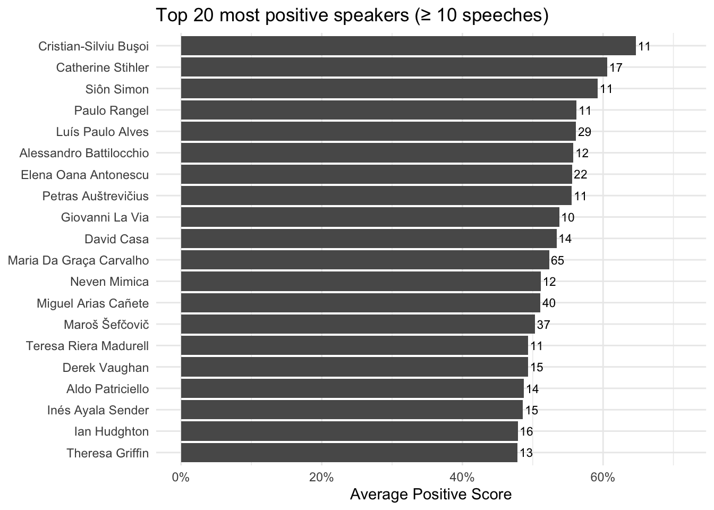
The “top positive speakers” are the speakers whose sentences are most frequently classified as positive by the sentiment model, on average, across their speeches. Concretely, an average positive score above 40% means that, when you run the model on all sentences in a speaker’s speeches and then aggregate to the speech level, more than 40% of their sentences are labeled “Positive” (on average across speeches). This should be interpreted as a measure of tone and framing, not as a measure of “truth,” “quality,” or “support for climate action.” A high positive share often reflects rhetorical choices such as: emphasizing solutions, progress, cooperation, and opportunity (e.g., clean energy, innovation, shared commitments), using constructive or motivational language (calls to action framed in hopeful terms), highlighting success stories (achievements, targets met, partnerships), employing diplomatic language that stresses confidence and collective agency.
avg_scores_per_party = speech_sentiment %>% group_by(party) %>%
summarise("avg_neg" = mean(negative),
"avg_pos" = mean(positive),
"avg_neutral" = mean(neutral),
"nb_speeches" = n_distinct(speech_id))p_pos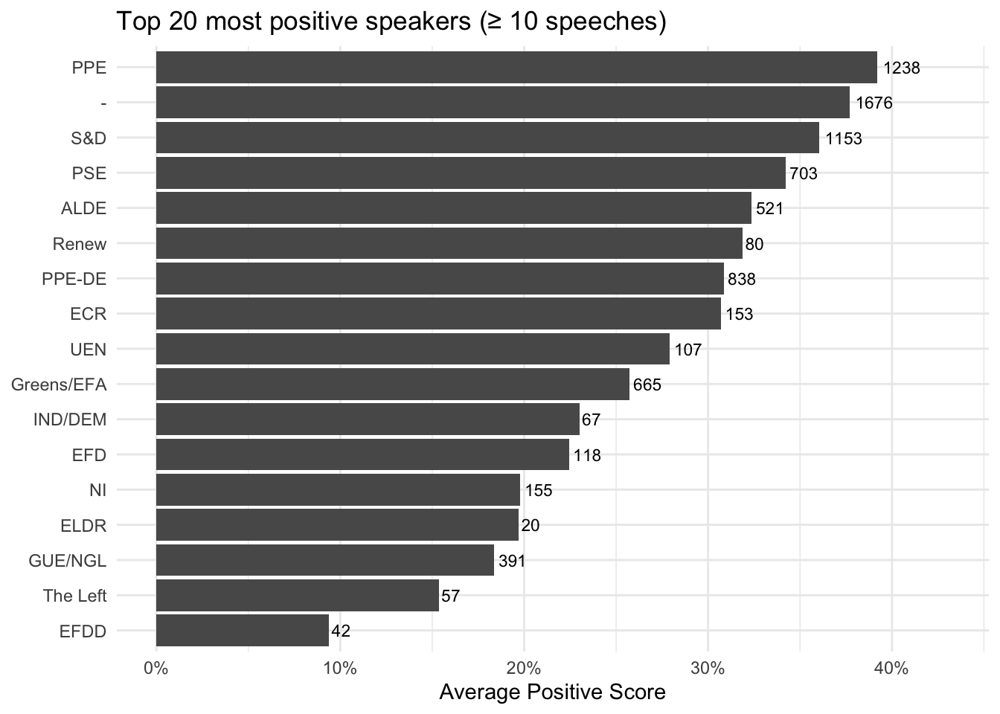
1.8 Link with topic modelling
In order to reach a deeper understanding of what’s going on here, we perform topic modelling on the documents. The results of the topic modelling exercise have been added to the speech data under the “topic” column.
Let’s have a look at the position of different parties with regards to these topics.
# We start with loading and preparing the data
load("~/Desktop/Teachings/NetworkIsLife2/NetworkIsLife/Sentiment_analysis_session/climate_change_speeches_topic.rdata")
# We add the Topic to the speech dataset
speech_sentiment$Topic = climate_change_speeches$Topic[match(speech_sentiment$speech_id, climate_change_speeches$Speech_id)]
# We load the labels of the topics so we can assign them to improve the visuals
load("~/Desktop/Teachings/NetworkIsLife2/NetworkIsLife/speeches_topic_labels.rdata")
speech_sentiment$Topic = Labels$label[match(speech_sentiment$Topic, Labels$topic)]
# Remove the speeches that didn't get a topic assigned.
speech_sentiment = subset(speech_sentiment, speech_sentiment$Topic != "NA")library(ggrepel)
min_speeches <- 10
level <- "party" # or "speaker"
# topic share per group
topic_feat <- speech_sentiment %>%
count(party, Topic, name = "n") %>%
group_by(party) %>%
mutate(topic_share = n / sum(n)) %>%
ungroup() %>%
select(party, Topic, topic_share) %>%
pivot_wider(names_from = Topic, values_from = topic_share, values_fill = 0)
# sentiment composition per group
sent_feat <- speech_sentiment %>%
group_by(party) %>%
summarise(
nb_speeches = n(),
avg_neg = mean(negative, na.rm = TRUE),
avg_neu = mean(neutral, na.rm = TRUE),
avg_pos = mean(positive, na.rm = TRUE),
.groups = "drop"
) %>%
filter(nb_speeches >= min_speeches)
profile <- sent_feat %>%
inner_join(topic_feat, by = "party")
# PCA on features (drop id columns)
X <- profile %>%
select(-all_of("party"), -nb_speeches) %>%
as.data.frame()
pca <- prcomp(X, center = TRUE, scale. = TRUE)
pca_df <- profile %>%
select(all_of("party"), nb_speeches) %>%
bind_cols(as.data.frame(pca$x[, 1:2])) %>%
rename(PC1 = PC1, PC2 = PC2)
ggplot(pca_df, aes(PC1, PC2)) +
geom_point() +
geom_text_repel(aes(label = party), max.overlaps = 30) +
labs(title = paste0("Rhetorical profiles (", level, ")"),
subtitle = paste0("PCA of topic shares + avg sentiment composition; n≥", min_speeches),
x = "PC1", y = "PC2") +
theme_minimal()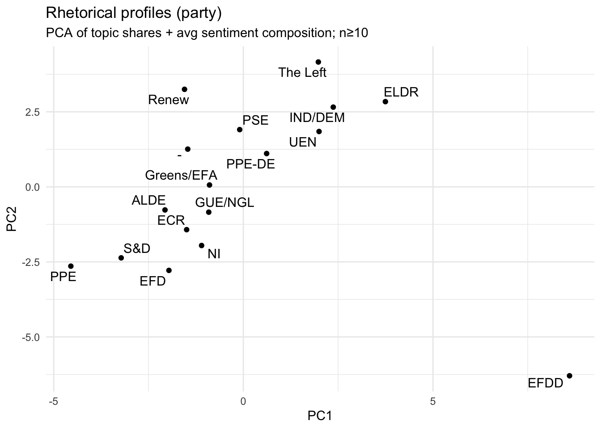
What this PCA map shows is similarity in rhetorical profile between party groups, where “rhetorical profile” is defined by the variables we supplied:
- topic shares (which topics a party talks about relatively more/less)
- sentiment composition (how positive/neutral/negative their speeches are, on average).
Each point = one party group, positioned so that parties with similar topic–sentiment patterns end up close together. Distance matters more than direction: parties that sit near each other have comparable mixes of topics and tone; parties far apart are rhetorically distinct in this dataset. PC1 and PC2 are data-driven axes, not pre-labeled political dimensions. They are the two strongest “difference dimensions” extracted from the topics and sentiment features.
- A large “mainstream cluster” on the left/center-left On the left side of PC1 you have a dense set of parties (e.g., S&D, ALDE, ECR, Greens/EFA, GUE/NGL, PSE, Renew, with PPE and EFD also on the left but lower on PC2).
Interpretation: these parties are relatively similar in how they combine topics and sentiment in climate speeches—there are differences, but they are modest compared to the distances to the outliers on the right. This is a typical PCA outcome when many groups share a broadly comparable agenda and rhetorical style, and only a few groups deviate strongly.
- PC2 separates “higher-PC2” parties from “lower-PC2” parties The vertical axis (PC2) is differentiating parties even when they are not far apart on PC1. For example: Renew and PSE sit higher on PC2 than many others. S&D, PPE, EFD, NI are lower on PC2.
Interpretation: there is a second, independent contrast in the data—often this ends up being something like topic emphasis (e.g., finance vs adaptation vs energy) or communication style (more consistently evaluative vs more mixed/neutral). Without the loadings, you should not name it, but you can state clearly that PC2 captures a distinct rhetorical differentiation beyond whatever PC1 is capturing.
A right-side group with a clearly different profile On the right side (higher PC1), you see UEN, IND/DEM, ELDR, and The Left higher up, and PPE-DE closer to the center-right. Interpretation: these parties’ topic and sentiment mixtures are systematically different from the left-side cluster. “Different” here does not mean “more positive/negative” per se—it means their combination of what they talk about and how the sentiment model classifies the tone diverges.
One extreme outlier: EFDD EFDD sits far to the bottom-right, well separated from all other parties. Interpretation: EFDD has a highly distinctive rhetorical profile in your data—either because: it concentrates strongly on a subset of topics that others do not emphasize, and/or its sentiment composition is unusual (e.g., much more negative or much more neutral/positive than others), and/or it uses language patterns that the sentiment model consistently classifies differently.
parties/speakers on the left of the space talk relatively more about international governance frameworks, cooperation, institutional policy instruments, and leadership/equity framing, and their speeches are more positive on average (as measured by the chosen model).
PC2 is primarily a “multilateral climate policy architecture” axis, contrasting parties who emphasize European regional development + international negotiations/agreements + climate finance and policy instruments versus parties whose profile is less dominated by that bundle and is relatively more associated with Transatlantic Relations.
Parties/speakers lower on PC2 devote relatively more attention to the formal architecture of climate governance—Kyoto/Paris, negotiations, finance, and policy instruments—often in an EU–international development framing (EU–Africa relations, regional development policy).
This looks like a “procedural/institutional multilateralism” dimension: agreements, negotiation venues, international commitments, finance mechanisms, and structured cooperation.
The “positive side” of PC2 (upward direction): parties/speakers higher on PC2 are comparatively more associated with Transatlantic Relations in their topic mix, and comparatively less dominated by the Kyoto/Paris/negotiations/finance cluster. Importantly, this does not mean they “ignore climate.” It means that, relative to others, their rhetorical profile is less centered on the multilateral climate policy machinery and more on a geopolitical/relationship frame (as captured by your topic model).
library(dplyr)
library(ggplot2)
library(forcats)
library(scales)
# speech_sentiment has one row per speech with columns:
# party, Topic, Positive, Negative, Neutral (as proportions 0–1)
# If your column names differ, change them here.
min_cell_n <- 10 # only show topic-party cells with at least this many speeches
topic_party <- speech_sentiment %>%
mutate(
Topic = as.character(Topic),
party = as.character(party),
net_pos = positive - negative
) %>%
group_by(party, Topic) %>%
summarise(
net_pos = mean(net_pos, na.rm = TRUE),
n_speeches = n(),
.groups = "drop"
) %>%
filter(n_speeches >= min_cell_n) %>%
# Optional ordering for readability
group_by(Topic) %>% mutate(topic_order = mean(net_pos, na.rm = TRUE)) %>% ungroup() %>%
group_by(party) %>% mutate(party_order = mean(net_pos, na.rm = TRUE)) %>% ungroup() %>%
mutate(
Topic = fct_reorder(Topic, topic_order),
party = fct_reorder(party, party_order)
)
ggplot(topic_party, aes(x = party, y = Topic, fill = net_pos)) +
geom_tile() +
scale_fill_gradient2(midpoint = 0) +
labs(
title = "Party–topic tone map",
subtitle = paste0("Cell value = mean(%Positive − %Negative) across speeches; showing cells with n ≥ ", min_cell_n),
x = NULL, y = NULL, fill = "Pos − Neg"
) +
theme_minimal() +
theme(
axis.text.x = element_text(angle = 45, hjust = 1),
panel.grid = element_blank()
)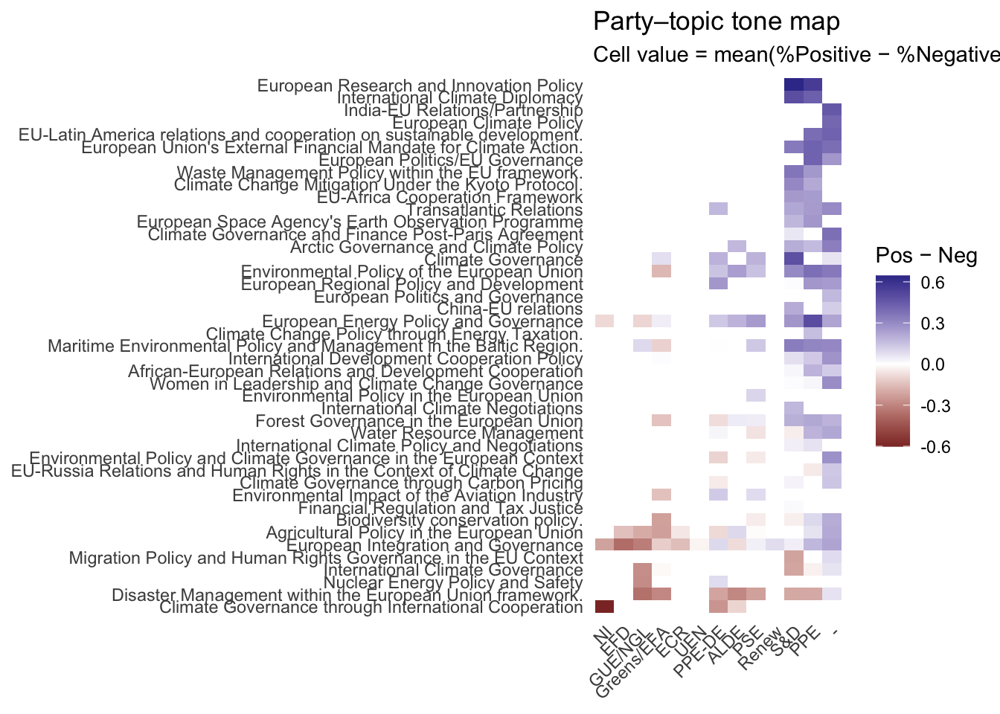
Diving into emotions: Valence/Arousal/Dominance
When we analyse UN climate speeches, a simple positive / negative / neutral label is often too coarse to capture what political language is doing. A speaker can sound “positive” while warning about catastrophic risk (“we must act now”), or “negative” while asserting control and leadership (“we will enforce compliance”). The VAD framework (Valence–Arousal–Dominance) is designed to model emotion as continuous dimensions, which better matches the way real rhetoric blends urgency, hope, fear, authority, blame, and resolve.
Valence (pleasantness) It captures how positive or negative the language feels. High valence: hope, solidarity, progress, gratitude, optimism (“we can succeed”, “opportunity”, “together”) Low valence: harm, loss, anger, blame, fear, pessimism (“catastrophe”, “failure”, “injustice”, “threat”) Valence is the closest analogue to classic sentiment polarity, but it is only one part of the emotional signal.
Arousal (activation / intensity) It captures how energized, urgent, or emotionally “activated” the language is. High arousal: urgency, alarm, outrage, mobilization (“now”, “must”, “crisis”, “emergency”, “cannot wait”) Low arousal: calm, procedural, measured, technocratic language (“note”, “consider”, “framework”, “ongoing process”) High arousal does not mean “negative”, it means intense. A rallying, inspirational call can be high arousal and high valence.
Dominance (control / agency / power) It captures whether the speaker conveys control, authority, and capability versus helplessness or subordination. High dominance: agency, resolve, command, capacity (“we will implement”, “we lead”, “we enforce”, “we can deliver”) Low dominance: vulnerability, dependency, uncertainty, being acted upon (“we are exposed”, “we cannot cope”, “we depend on support”). Dominance is especially relevant in international politics: it often reflects positioning (leadership vs victimhood), not just emotion. The interpretation of the dimensions is shown below:
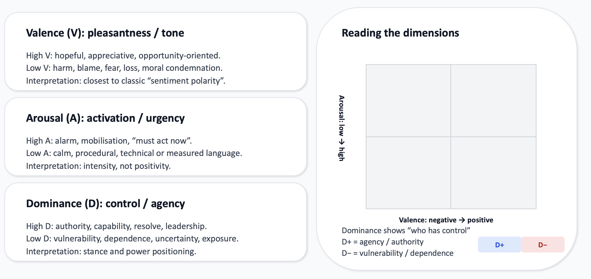
Using this matrix, let’s return to the speech from the Dictator and position some sentences in this matrix.
Illustration
To compute these values we use a model trained for this purpose. Let’s set up a model via hugging face.
We require two components from Hugging Face: A tokenizer: converts raw text into the numeric format the model expects (token IDs, attention masks, etc.). A pre-trained neural network model: performs the actual inference, producing VAD-related outputs for each text input. Together, these are the minimal building blocks required to score sentences into the three dimensions.
tokenizer <- huggingfaceR::hf_load_tokenizer("RobroKools/vad-bert")
model <- huggingfaceR::hf_load_AutoModel_for_task(
model_type = "AutoModelForSequenceClassification",
model_id = "RobroKools/vad-bert"
)The first line downloads (if not already cached) and loads the tokenizer associated with RobroKools/vad-bert.
Transformer models do not read text directly. They require tokenized input, it works with the follwoing steps: - 1. The tokenizer splits text into subword units (tokens). - 2. It maps those tokens to integers (input_ids).
The second line loads a transformer model architecture suitable for sequence-level prediction (one prediction per input text span, e.g., one sentence). AutoModelForSequenceClassification means: The base language model (BERT-like encoder) produces a representation of the sentence. A small “classification/regression head” on top converts that representation into output scores.
Overall, to set up a pipeline we need two elements, a task and a model. Many models exist on hugging face with many different applications. The basic logic to use them is always the same: model + task. The reference we put for the model “RobroKools/vad-bert” is a direct link to the model on the website (https://huggingface.co/RobroKools/vad-bert), the huggingfaceR package ensures the link and the download of the model.
Now that we have downloaded and loaded the model, we can use it to compute the values for valence, arousal and dominance. We will use the predict_vad function from the NetworkIsLifeR package.
# compute the values on the Charlie Chaplin speech
speech$Valence <- 0
speech$Arousal <- 0
speech$Dominance <- 0
for(i in 1:dim(speech)[1]){
if(i%% 100 == 0){print(i)}
tmp <- predict_vad(speech[i,2]$sentence)
speech[i,5] <- tmp[[1]]
speech[i,6] <- tmp[[2]]
speech[i,7] <- tmp[[3]]
}Based on the score we can visualize some of the results. In the graph below some sentences are positionned in the VAD framework.
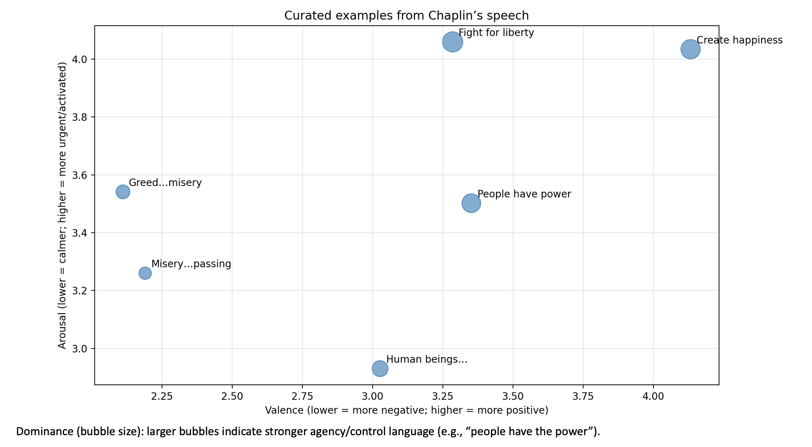
library(dplyr)
library(tidyr)
library(ggplot2)
library(slider)
# Rolling window for smoothing (odd numbers work nicely)
k <- 3
vad <- speech %>%
mutate(sentence_id = row_number()) %>%
arrange(sentence_id) %>%
mutate(
valence_roll = slide_dbl(Valence, mean, .before = floor(k/2), .after = floor(k/2), .complete = FALSE),
arousal_roll = slide_dbl(Arousal, mean, .before = floor(k/2), .after = floor(k/2), .complete = FALSE),
dominance_roll = slide_dbl(Dominance, mean, .before = floor(k/2), .after = floor(k/2), .complete = FALSE)
)
vad_long <- vad %>%
select(sentence_id,
Valence, Arousal, Dominance,
valence_roll, arousal_roll, dominance_roll) %>%
pivot_longer(
cols = -sentence_id,
names_to = c("dimension", "series"),
names_pattern = "(Valence|Arousal|Dominance)(?:_(roll))?",
values_to = "value"
) %>%
mutate(series = if_else(is.na(series), "raw", "rolling_mean"))
vad_long = na.omit(vad_long)
p <- ggplot(vad_long, aes(x = sentence_id, y = value)) +
geom_line(data = subset(vad_long, series == "rolling_mean"), linewidth = 1.1) +
facet_wrap(~dimension, ncol = 1, scales = "free_y") +
labs(
title = "How VAD evolves across the speech",
subtitle = paste0("Per-sentence scores (raw) with rolling mean smoothing (k = ", k, ")"),
x = "Sentence order",
y = "Score"
) +
theme_minimal()
print(p)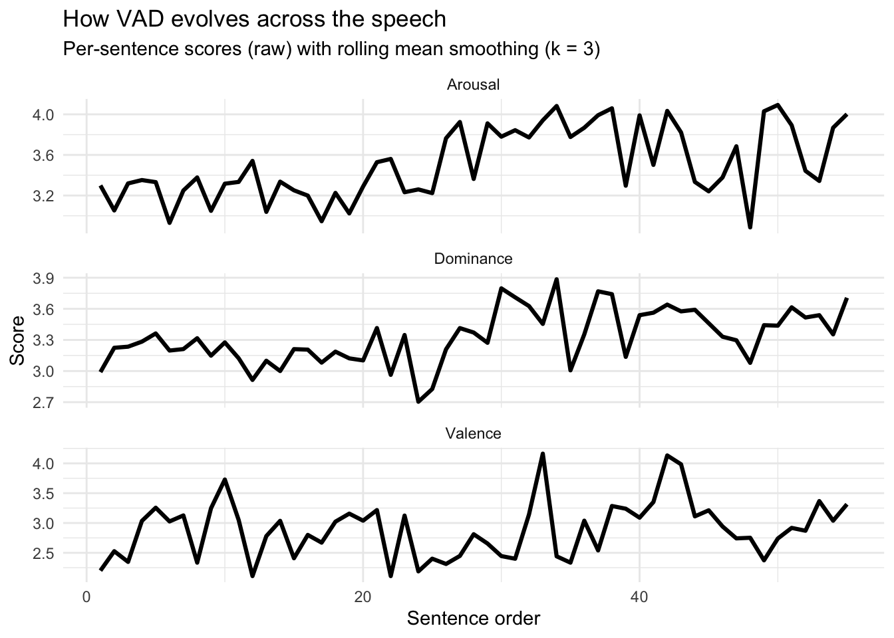
Arousal: the speech becomes more activated and urgent Early section (≈ sentences 1–20): fairly steady, mid-level arousal (~3.1–3.4). This reads as controlled, conversational intensity. Middle section (≈ 20–40): a clear step-up toward higher arousal (~3.7–4.0). That typically corresponds to faster pace, stronger emphasis, and a “build” in urgency. Later section (≈ 40–end): mostly remains high, with one noticeable dip (a brief calmer/softer moment) followed by recovery back toward high arousal. The speaker “ramps up” intensity—arousal is capturing that crescendo.
Dominance: the speaker becomes more assertive/agentic Early section: dominance sits around ~3.1–3.3 (moderate agency/command). Around the mid-speech: there’s a temporary trough (down near ~2.7–3.0), then a strong rise into the ~3.6–3.9 range. Later section: dominance stays relatively elevated (~3.4–3.6) with fluctuations. Interpretation: the speech shifts from a more reflective/appealing stance to a more directive, empowered, “we must” stance. Dominance is often the cleanest signal of rhetorical authority and agency.
Valence: alternation between critique (lower) and hope (higher) Valence is the most episodic dimension here. You see distinct peaks (near ~4.0+) and distinct troughs (near ~2.3–2.5), rather than a steady trend. Mid-speech includes a sharp positive spike followed by an immediate drop—very consistent with speeches that pivot between condemning something (lower valence) and offering an uplifting vision (higher valence).
Illustration on multiple texts
We can perform the same exercise on a set of texts. Let’s switch back to the set of UN speeches. We compute the VAD values using the same loop as before. Because this takes a while to run, the values are supplied on brightspace.
library(dplyr)
library(tidyr)
library(ggplot2)
library(scales)
load("~/Desktop/Teachings/NetworkIsLife2/NetworkIsLife/VAD_scores.rdata")
load("~/Desktop/Teachings/NetworkIsLife2/NetworkIsLife/Sentiment_analysis_session/climate_change_speeches_topic.rdata")
load("~/Desktop/Teachings/NetworkIsLife2/NetworkIsLife/speeches_topic_labels.rdata")
# the formats of the speech ids are different in both dataframes, one is numeric and one is text, we need to harmonise this before we can merge.
climate_change_speeches$Speech_id <- as.numeric(climate_change_speeches$Speech_id)
# we need to harmonise the column names to merge
colnames(climate_change_speeches)[18] <- "speech_id"
# we add the topics to the data
VAD_scores <- left_join(VAD_scores, climate_change_speeches, by = "speech_id")
VAD_scores$topic_label <- Labels$label[match(VAD_scores$Topic, Labels$topic)]
# -----------------------------
# Settings
# -----------------------------
topic_pick <- "Women in Leadership and Climate Change Governance"
top_n_parties <- 8 # keep plot readable
min_sentences_per_party <- 40 # filter tiny samples
# -----------------------------
# 1) Aggregate VAD per party for the chosen topic
# -----------------------------
# Use lowercase dimension names, consistent with recode()
dims <- c("valence", "arousal", "dominance")
dim_levels <- c("valence", "arousal", "dominance") # to close the polygon
# order of axes
axes <- c("valence", "arousal", "dominance")
k <- length(axes)
party_vad <- VAD_scores %>%
filter(topic_label == topic_pick) %>%
group_by(party) %>%
summarise(
n = n(),
valence = mean(Valence, na.rm = TRUE),
arousal = mean(Arousal, na.rm = TRUE),
dominance = mean(Dominance, na.rm = TRUE),
.groups = "drop"
) %>%
filter(n >= min_sentences_per_party) %>%
arrange(desc(n)) %>%
slice_head(n = top_n_parties)
party_vad_scaled <- party_vad %>%
mutate(
valence_s = rescale(valence, to = c(0, 1)),
arousal_s = rescale(arousal, to = c(0, 1)),
dominance_s = rescale(dominance, to = c(0, 1))
)
base_df <- party_vad_scaled %>%
select(party, n, valence_s, arousal_s, dominance_s) %>%
pivot_longer(
cols = c(valence_s, arousal_s, dominance_s),
names_to = "dimension",
values_to = "value"
) %>%
mutate(
dimension = recode(dimension,
valence_s = "valence",
arousal_s = "arousal",
dominance_s = "dominance"),
dimension = factor(dimension, levels = axes),
axis_id = as.integer(dimension)
)
# add closing point (repeat first axis at k+1)
closing_df <- base_df %>%
filter(axis_id == 1) %>%
mutate(axis_id = k + 1)
radar_df <- bind_rows(base_df, closing_df) %>%
arrange(party, axis_id)
ggplot(radar_df, aes(x = axis_id, y = value, group = party)) +
geom_polygon(aes(fill = party), alpha = 0.15, color = NA) +
geom_path(aes(color = party), linewidth = 1) +
geom_point(aes(color = party), size = 2) +
coord_polar(start = 0) +
scale_x_continuous(
limits = c(1, k + 1),
breaks = 1:k,
labels = axes
) +
scale_y_continuous(limits = c(0, 1), breaks = seq(0, 1, 0.25)) +
labs(x = NULL, y = "Scaled mean score (0–1)") +
theme_minimal() +
theme(panel.grid.minor = element_blank())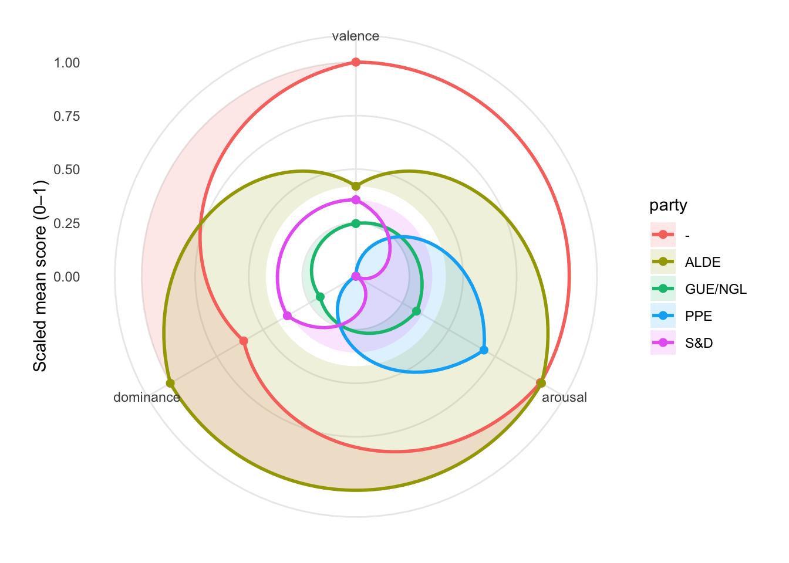
Valence (positive vs negative framing)
The “-” group (red) is clearly the most positive on this topic (highest valence). ALDE and S&D sit in the middle. PPE is the least positive (lowest valence), suggesting a comparatively more critical/problem-focused framing (or less celebratory/hopeful language) in this topic slice.
Arousal (urgency / intensity)
ALDE and “-” are the most high-arousal: they speak about this topic with the most urgency/energy relative to the others. PPE is also relatively high arousal (though not the highest), implying energetic or mobilizing language. S&D and GUE/NGL are lower arousal, implying calmer, less urgent rhetoric on this topic (relative to the others).
Dominance (agency / assertiveness / “we can act” stance)
ALDE is the clear standout: highest dominance. This typically corresponds to language that is more agentic/directive (“we will,” “we must,” “we can deliver,” strong calls to action). The “-” group is moderate dominance—more agentic than most, but not as assertive as ALDE. PPE is lowest dominance: relative to others, it frames the topic with less agency/command (more descriptive, cautious, or constrained language). S&D and GUE/NGL are low-to-moderate.
Party “profiles” ALDE (olive): Urgent + highly agentic (high arousal, high dominance), with only mid-level positivity → reads like “strong call-to-action, pragmatic, forceful.” “-” group (red): Most positive + highly urgent, with moderate dominance. This reads like “optimistic and energized, somewhat assertive.” PPE (blue): Relatively urgent but least positive and least agentic. This reads like “problem/concern framing with intensity, but less ‘command’ language.”
S&D (magenta): Moderate across the board this reads like “balanced framing; neither especially urgent nor especially agentic.” GUE/NGL (green): Lowest intensity overall, “more subdued tones on this topic relative to others shown.”
library(dplyr)
library(tidyr)
library(ggplot2)
library(scales)
load("~/Desktop/Teachings/NetworkIsLife2/NetworkIsLife/VAD_scores.rdata")
load("~/Desktop/Teachings/NetworkIsLife2/NetworkIsLife/Sentiment_analysis_session/climate_change_speeches_topic.rdata")
load("~/Desktop/Teachings/NetworkIsLife2/NetworkIsLife/speeches_topic_labels.rdata")
# the formats of the speech ids are different in both dataframes, one is numeric and one is text, we need to harmonise this before we can merge.
climate_change_speeches$Speech_id <- as.numeric(climate_change_speeches$Speech_id)
# we need to harmonise the column names to merge
colnames(climate_change_speeches)[18] <- "speech_id"
# we add the topics to the data
VAD_scores <- left_join(VAD_scores, climate_change_speeches, by = "speech_id")
VAD_scores$topic_label <- Labels$label[match(VAD_scores$Topic, Labels$topic)]
# -----------------------------
# Settings
# -----------------------------
topic_pick <- "Nuclear Energy Policy and Safety"
top_n_parties <- 8 # keep plot readable
min_sentences_per_party <- 40 # filter tiny samples
# -----------------------------
# Aggregate VAD per party for the chosen topic
# -----------------------------
# Use lowercase dimension names, consistent with your recode()
dims <- c("valence", "arousal", "dominance")
dim_levels <- c("valence", "arousal", "dominance") # to close the polygon
# order of axes
axes <- c("valence", "arousal", "dominance")
k <- length(axes)
party_vad <- VAD_scores %>%
filter(topic_label == topic_pick) %>%
group_by(party) %>%
summarise(
n = n(),
valence = mean(Valence, na.rm = TRUE),
arousal = mean(Arousal, na.rm = TRUE),
dominance = mean(Dominance, na.rm = TRUE),
.groups = "drop"
) %>%
filter(n >= min_sentences_per_party) %>%
arrange(desc(n)) %>%
slice_head(n = top_n_parties)
party_vad_scaled <- party_vad %>%
mutate(
valence_s = rescale(valence, to = c(0, 1)),
arousal_s = rescale(arousal, to = c(0, 1)),
dominance_s = rescale(dominance, to = c(0, 1))
)
base_df <- party_vad_scaled %>%
select(party, n, valence_s, arousal_s, dominance_s) %>%
pivot_longer(
cols = c(valence_s, arousal_s, dominance_s),
names_to = "dimension",
values_to = "value"
) %>%
mutate(
dimension = recode(dimension,
valence_s = "valence",
arousal_s = "arousal",
dominance_s = "dominance"),
dimension = factor(dimension, levels = axes),
axis_id = as.integer(dimension)
)
# add closing point (repeat first axis at k+1)
closing_df <- base_df %>%
filter(axis_id == 1) %>%
mutate(axis_id = k + 1)
radar_df <- bind_rows(base_df, closing_df) %>%
arrange(party, axis_id)
# -----------------------------
# Plot: radar (triangle) using coord_polar
# -----------------------------
ggplot(radar_df, aes(x = axis_id, y = value, group = party)) +
geom_polygon(aes(fill = party), alpha = 0.15, color = NA) +
geom_path(aes(color = party), linewidth = 1) +
geom_point(aes(color = party), size = 2) +
coord_polar(start = 0) +
scale_x_continuous(
limits = c(1, k + 1),
breaks = 1:k,
labels = axes
) +
scale_y_continuous(limits = c(0, 1), breaks = seq(0, 1, 0.25)) +
labs(x = NULL, y = "Scaled mean score (0–1)") +
theme_minimal() +
theme(panel.grid.minor = element_blank())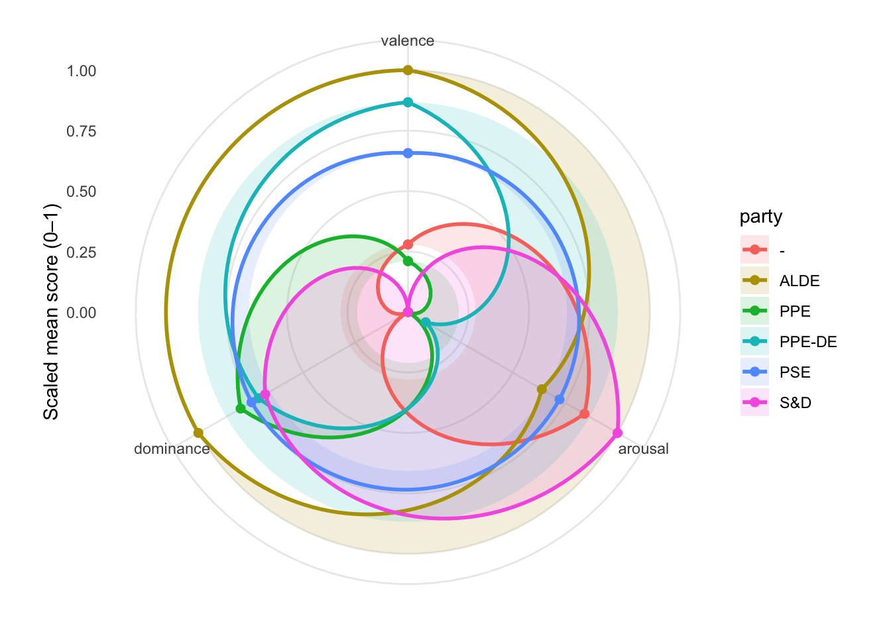